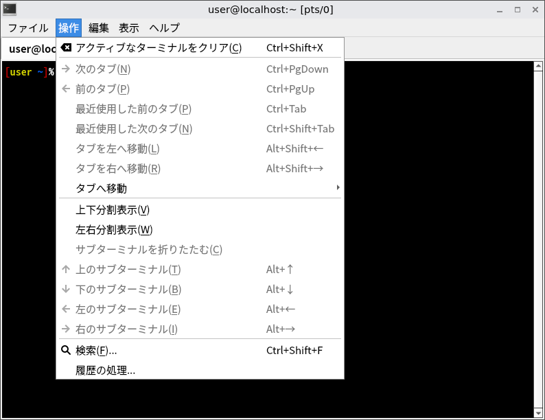
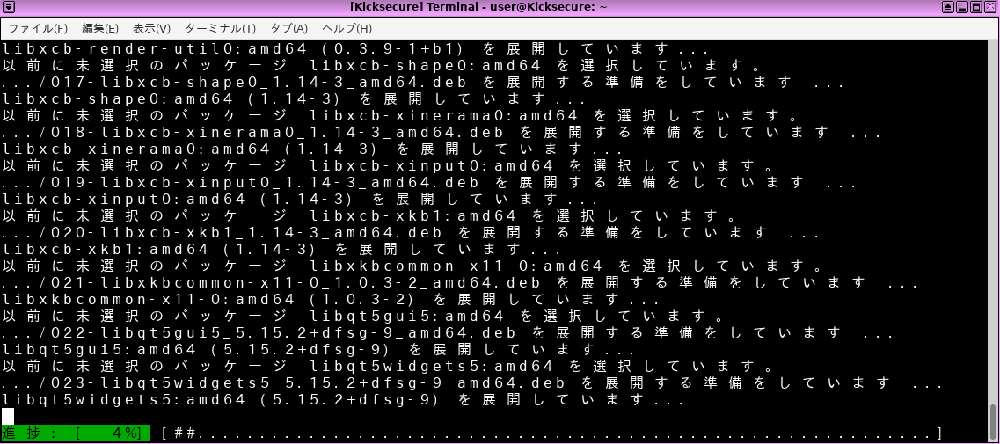
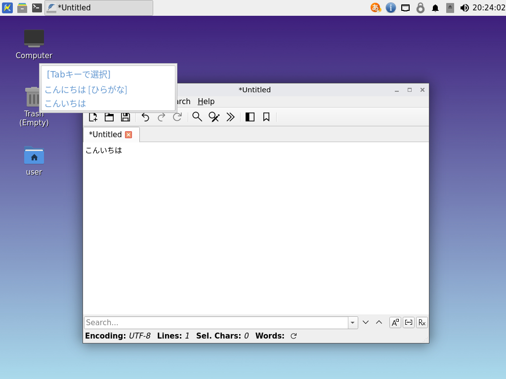
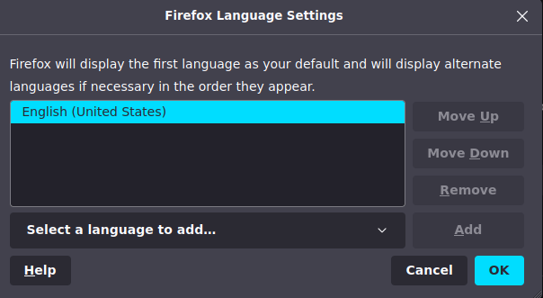

VirtualBox/Green Turtle IssueDocumentationCommon CLI CommandsPrevious page: VirtualBox/Green Turtle IssueIndex page: DocumentationNext page: Common CLI CommandsChange the System or Browser Language

This wiki page provides information on how to change the system language in Kicksecure, as well as how to install additional languages and input methods.
Introduction
The system language used in Kicksecure is easily changed. The technical steps are identical to the Debian method because Kicksecure is based on Debian GNU/Linux and LXQt. Users can also refer to Debian or LXQt upstream documentation. It is also easy to change the language in Firefox Browser (see further below). Native English speakers do not need to make any changes.
System
These instructions are sourced from the Debian wiki ChangeLanguage and InputMethodBuster entries.
All Languages
1 Open a terminal in Kicksecure.
Open a terminal.
Platform specific. Select your platform.

Kicksecure USER Session
If you are using a graphical Kicksecure with LXQt, complete the following steps.
Start menu -> System Tools ->
QTerminal

Kicksecure SYSMAINT Session
In the System Maintenance Panel, under the Misc section,
click Open Terminal.

Kicksecure-Qubes
If you are using Kicksecure-Qubes, complete the following steps.
Qubes App Launcher (blue/grey "Q") ->
Kicksecure App Qube (commonly named kicksecure)
-> QTerminal
2 Check the language environment variable.
Run. [1]
env | grep LANG
The output should show.
LANG=en_US.UTF-83 Determine the code for your language and country.
Before re-configuring the locale to your local language it is necessary to identify the two letter code for your language and country:
- Language: the two-letter ISO 639-1 language code is found in
the fourth column (639-1) here.
For example, Japanese is
ja, Korean isko, German isdeand so on. - Country: this
website ("Country Codes") identifies country codes. For example,
Japan is
JP, Korea isKR, Germany isDEand so on.
It is now possible to combine these codes to determine the language
to export. For example, Japanese is ja_JP.UTF-8, Korean is
ko_KR.UTF-8, German is de_DE.UTF-8 and so
on.
4 Reconfigure locales.
Reconfigure locales with the following command. [2]
sudo dpkg-reconfigure locales
A window will prompt for the preferred locale(s) to be made available. Select the preferred option(s) with the space bar -- multiple locales can be chosen.
5 Reboot Kicksecure.
This is required for the changes to take effect.
Figure: Japanese Locale in Kicksecure

Fonts
Depending on the locale, it may be necessary to install additional fonts in Kicksecure so characters present correctly system-wide.
1 Platform specific notice.
- Kicksecure: No special notice.
- Kicksecure-Qubes: In Template.
2 Font installation.
- Debian stable fonts packages.
- TrueType (TTF) and OpenType (OTF) fonts are generally recommended.
These packages start with
fonts-. - For Korean fonts, an anonymous forums contributor previously
recommended the following additional packages:
fonts-unfonts-core(Korean TrueType fonts) andnabi(Korean X input method). After restarting Kicksecure and starting nabi, the Korean script should be available system-wide for writing and reading. [3]
For example to install Japanese TrueType fonts:
Install package(s) fonts-noto-cjk following these
instructions:
1 Platform specific notice.
- Kicksecure: No special notice.
- Kicksecure-Qubes: In Template.
2 Update the package lists and upgrade the system.
sudo apt update && sudo apt full-upgrade
3
Install the fonts-noto-cjk package(s).
Using apt command line --no-install-recommends option is in
most cases optional.
sudo apt install --no-install-recommends fonts-noto-cjk
4 Platform specific notice.
- Kicksecure: No special notice.
- Kicksecure-Qubes: Shut down Template and restart App Qubes based on it as per Qubes Template Modification.
5 Done.
The procedure of installing package(s) fonts-noto-cjk is
complete.
Figure: Japanese Font Installation in Kicksecure

Input Method
The ibus package is not recommended in Kicksecure 18. It
can interfere with both keyboard and mouse input in the default LXQt
session. It is also non-trivial to configure. Most keyboard layouts are
handled natively by labwc without issues.
Some languages (like Japanese) require an input method application to
write in the language's usual script. fcitx is known to
work. To set it up:
1 Open a terminal in Kicksecure.
Open a terminal.
Platform specific. Select your platform.

Kicksecure USER Session
If you are using a graphical Kicksecure with LXQt, complete the following steps.
Start menu -> System Tools ->
QTerminal

Kicksecure SYSMAINT Session
In the System Maintenance Panel, under the Misc section,
click Open Terminal.

Kicksecure-Qubes
If you are using Kicksecure-Qubes, complete the following steps.
Qubes App Launcher (blue/grey "Q") ->
Kicksecure App Qube (commonly named kicksecure)
-> QTerminal
2
Install fcitx.
sudo apt install fcitx
3
Install an input method engine for your language. For Japanese,
fcitx-mozc is known to work.
sudo apt install fcitx-mozc
4 Configure fcitx to autostart on login.
Run:
mkdir -p ~/.config/labwc nano ~/.config/labwc/autostart
Type in the following line at the end of the file:
fcitx
Save with Ctrl + S, then exit with
Ctrl + X.
5 Configure applications to use fcitx as an input method.
Run:
nano ~/.config/labwc/environment
Type in the following lines at the end of the file:
XMODIFIERS=@im=fcitx GTK_IM_MODULE=fcitx QT_IM_MODULE=fcitx
6
Log out and log back in. You should see a keyboard icon in the system
tray; this indicates that fcitx is running.
7
Right-click the fcitx icon in the system tray, and click
Configure.
8
Click the + button in the lower-left corner of the
window.
9
Uncheck Only Show Current Language.
10
Search for the input method you installed (note that this is NOT the
same as the name of the language you want to write text in!). For
instance, if you installed fcitx-mozc, search for
mozc here.
11
Click the input method, then click OK.
12
Close the fcitx configuration window.
13
To switch between input methods, press Ctrl + Space. The
newly chosen input method will be displayed on screen. Note that fcitx
tracks input methods on a per-window basis. For example, if you have two
Firefox windows open, and you switch to Japanese input via Mozc in one
window, the other window will still be using an English (or other) input
method.
14 Done.
Input method configuration is now complete.
Figure: Japanese Input in Kicksecure

Individual applications
The language of many applications can be adapted to your preference. Here are the different ways:
Automatic change
Some applications, like Abiword and Gnumeric, look for your language code in your operating system environment during installation and automatically install themselves with the appropriate language.
Using preference/settings inside application
Some other applications, like Firefox, provide an easy way to run the language of your choice by modifying the settings of the application.
Firefox
Using one of the methods below is sufficient to change the language in Firefox.
about:preferences Method
- Type
about:preferencesin the URL bar. - Scroll down to the languages section and search for the preferred
language:
Language->Set Alternatives... - Add the preferred language.
- Restart Firefox.
Figure: Firefox Language Selection

Mozilla Firefox Language Pack Method
https://addons.mozilla.org/en-US/firefox/language-tools/
Debian Firefox Language Pack Method
 Untested. Please test and leave feedback.
Untested. Please test and leave feedback.
Complete these steps in Kicksecure.
1 Update the package lists.
sudo apt update
2 Search for available language packs.
apt-cache search firefox-esr-l10n-
3 Install a language pack.
In the example below, replace -de with the preferred language.
sudo apt install firefox-esr-l10n-de
Language Pack Method
Thunderbird
When installing an application with apt, begin by
looking for the existence of language packs associated with the
application. These packages are easily identified by the expression
-l10n- put after the name of the application's package name.
Then proceed to install the language pack. Apt will
automatically install the main application with it. This method works
with Thunderbird, Firefox and some
majors applications.
Example to get Thunderbird running in French:
1 Update the package lists. sudo apt update
2
Search for available language packs -l10n- with one of
these options list or search. (Don't forget
the asterisk '*' when using the list option to the command
apt) apt list
thunderbird-l10n-* apt search
thunderbird-l10n- apt-cache search
thunderbird-l10n-
3 Install the language pack corresponding to your language ('fr', 'de',...). Here 'fr' is chosen. sudo apt install thunderbird-l10n-fr
No change possible
Unfortunately, some others applications are limited to the language in which they have been written and cannot be changed.
See Also
Footnotes
- The Debian wiki notes:
First, you have to set EnvironmentVariables such as LANG, LANGUAGE, LC_CTYPE, LC_MESSAGES to your local language. Usually LANG (or LC_ALL) is sufficient.
- EDIT by Contributor: Reverted. Citation required. Debian upstream
bug report required. Do not omit the
LC_ALL=Ccomponent of the following command, asdpkg-reconfiguremay crash without it in some instances. sudo LC_ALL=C dpkg-reconfigure locales Install package(s)
fonts-unfonts-core nabifollowing these instructions: 1 Platform specific notice. * Kicksecure: No special notice. * Kicksecure-Qubes: In Template. 2 Update the package lists and upgrade the system. sudo apt update && sudo apt full-upgrade 3 Install thefonts-unfonts-core nabipackage(s). Usingaptcommand line--no-install-recommendsoption is in most cases optional. sudo apt install --no-install-recommends fonts-unfonts-core nabi 4 Platform specific notice. * Kicksecure: No special notice. * Kicksecure-Qubes: Shut down Template and restart App Qubes based on it as per Qubes Template Modification. 5 Done. The procedure of installing package(s)fonts-unfonts-core nabiis complete.